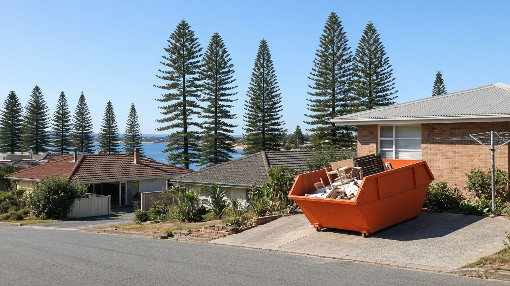
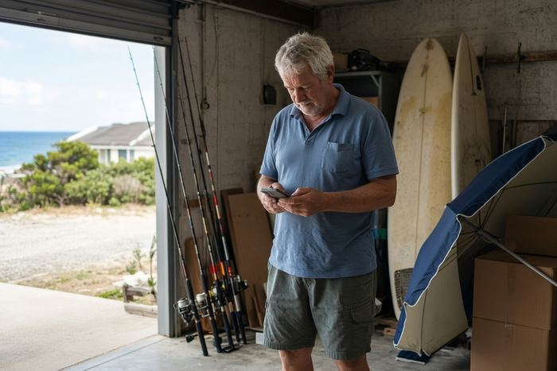
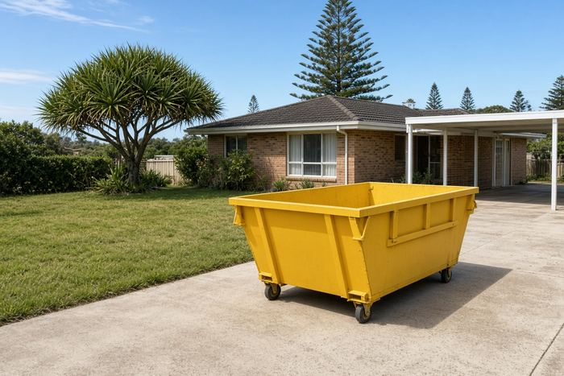
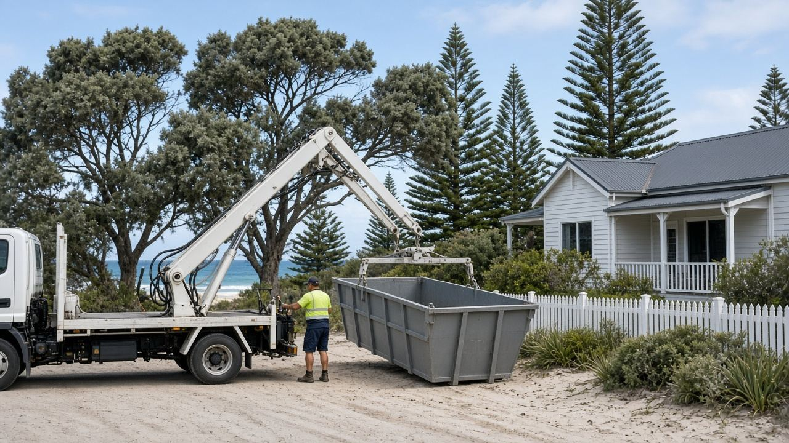
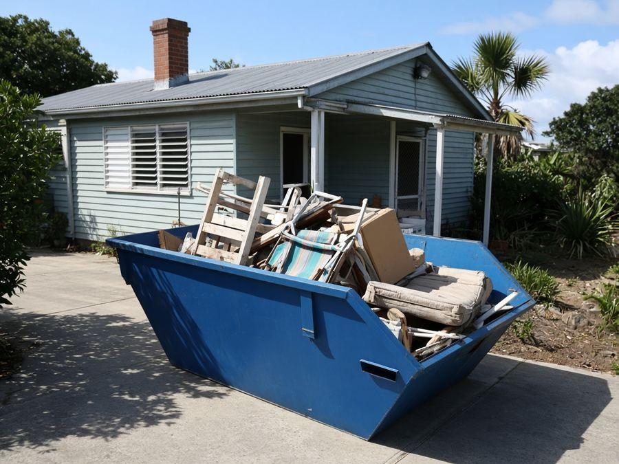
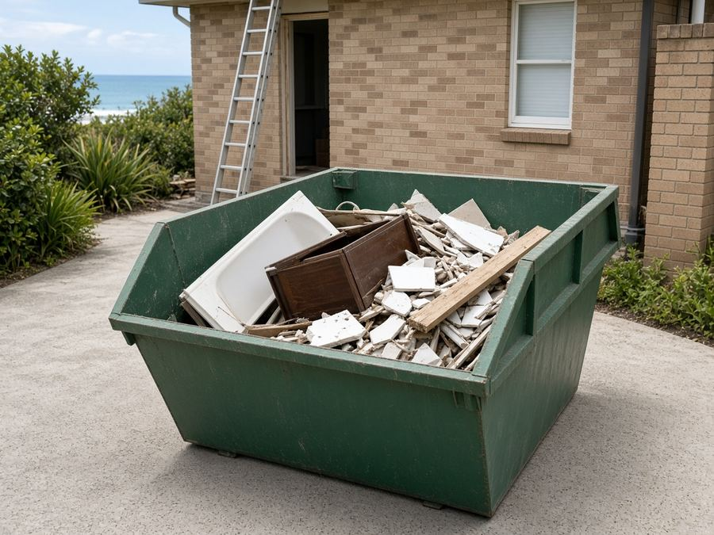
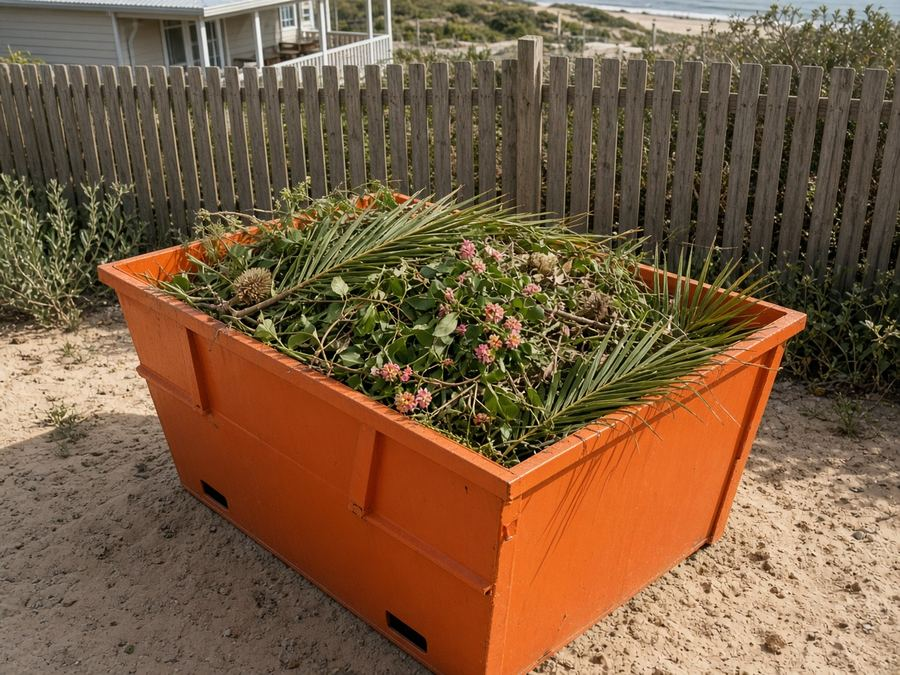
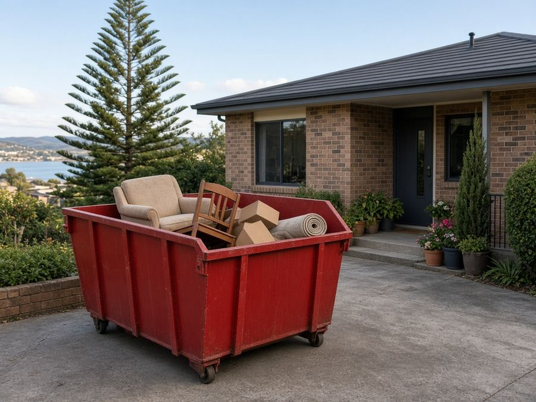
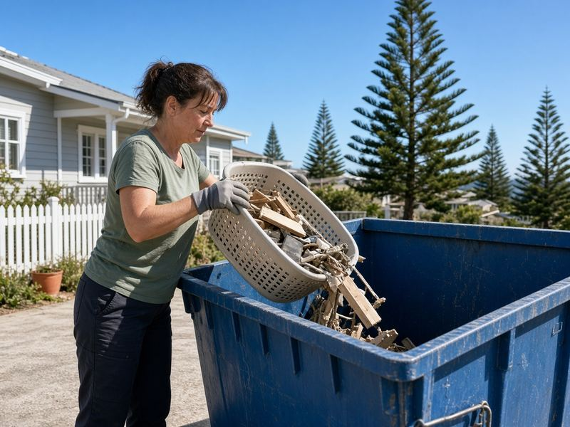

Skip Bins Forster: Free Skip Bin Quotes for Forster, Tuncurry and the Great Lakes
In short: Forster Skip Bins is a free quote service, not a skip hire company. Tell us your suburb and job, and we pass it to one local skip bin operator, who quotes you directly.
Turning over a holiday rental in Forster, renovating a unit in Tuncurry or downsizing at Tallwoods? Tell us your suburb, skip size and what's going in, and we'll pass it to one local skip bin operator for a free, no-obligation quote.
Last updated: 24 October 2026
Get a free skip bin quote in Forster
- Free quote for your exact job
- One local operator, not a call-centre auction
- Forster, Tuncurry, Hallidays Point, Pacific Palms and the Great Lakes
- No obligation to book
How it works

1Tell us what you're clearing
Pick your suburb, skip size and waste type in the quote form, then add your contact details.
- 2
One local operator gets it
We send your request to one skip bin company that covers Forster, Tuncurry or your part of the coast. No bidding war, no flood of calls.

3Agree the price and drop-off
The operator contacts you to confirm price, size and delivery. Book only if you're happy.
Forster Skip Bins is a referral and quote service run by Raf Web Studio. We don't own skips or trucks and don't take payments. The operator who quotes you supplies the bin and sets the price and hire terms.
Skip bin sizes for Forster jobs
Coastal blocks and units in Forster often have tight driveways, so smaller bins and skip bags are popular. A 2–3 m³ skip handles most garage or unit clear-outs, 4–6 m³ a bathroom or kitchen, and 8 m³ or more a full house. Skips are measured in cubic metres (m³). Wheelie bin comparisons assume a standard 240-litre bin (0.24 m³). Trailer loads assume a 6×4 box trailer loaded level with its sides, roughly 1 m³. Shapes and dimensions vary between operators, so we don't list exact measurements.


Illustrations are approximate and not to an exact scale.
Mini skip
≈ 8 wheelie bins · ≈ 2 trailer loads
A unit or garage clear-out, or a small load of sand, soil or broken pavers.
Small skip
≈ 13 wheelie bins · ≈ 3 trailer loads
A holiday rental turnover, a backyard tidy-up or a room or two of furniture.
Bathroom or laundry reno
≈ 17 wheelie bins · ≈ 4 trailer loads
A bathroom or laundry renovation, or replacing carpets in a beach house.
Kitchen reno or big clean-up
≈ 25 wheelie bins · ≈ 6 trailer loads
A kitchen renovation or a larger garden overhaul with palms and hedges.
House clear-out
≈ 33 wheelie bins · ≈ 8 trailer loads
Downsizing from a family home, or a deceased estate clear-out.
Large renovation
≈ 38 wheelie bins · ≈ 9 trailer loads
Large renovations and extensions, or a full house with bulky furniture.
Builders and big jobs
≈ 50 wheelie bins · ≈ 12 trailer loads
Building sites, a deck or carport demolition, or a big block clean-up. Needs room for the truck.
Skip bags of about 1 m³ are handy for units and narrow driveways. Heavy waste (soil, sand, concrete, tiles) usually needs a smaller bin because of weight limits.
What can and can't go in a skip
Waste type affects the price as much as size does. Operators tip loads at licensed facilities, and heavy loads now go to Taree because the Tuncurry tip no longer takes heavy vehicles. Be upfront about what's going in to get an accurate quote.
Usually accepted
- General household waste: furniture, toys, clothes, boxes, cupboard contents and general junk.
- Green waste: palm fronds, banksia and tea-tree prunings, lawn clippings and hedge trimmings (often cheaper on its own, with no dirt or rubbish mixed in).
- Renovation waste: timber, plasterboard, old cabinets, carpet, tiles and fittings.
- Heavy or clean fill: soil, sand, concrete, bricks, rock and pavers (often needs its own bin and has a lower weight limit).
- Scrap metal: old boat trailers, fencing, BBQs and outdoor furniture.
Not accepted, or extra charge
- Asbestos and fibro: never in a normal skip (see below).
- Tyres: usually banned or charged per tyre.
- Car and household batteries: a fire risk in a skip.
- Gas bottles and aerosols: can explode when compacted.
- Paint, oils, chemicals and liquids: including pool chemicals, boat fuel and paint tins.
- Mattresses: often accepted for an extra fee.
- Food waste, medical waste and e-waste: check first. Many operators won't take TVs, computers or fluorescent tubes.
A note on asbestos
Many of the older beach shacks and fibro holiday homes around Forster, Tuncurry and Pacific Palms were built with fibro, and it can contain asbestos. In NSW, removing more than 10 square metres of bonded (non-friable) asbestos needs a licensed removalist, and any friable asbestos needs a Class A licence. See SafeWork NSW's asbestos guidance. If you suspect asbestos, say so on the quote form. Never hide it in a general skip.
Dropping things off yourself
The Tuncurry Waste Management Centre is on Midge Orchid Road (formerly Tip Road), Tuncurry. MidCoast Council lists it as open daily 8am to 4pm, phone (02) 6554 9471. Since 17 March 2025 it no longer accepts heavy vehicles, which go to the Taree Waste Management Centre at Tinonee instead. It has a Community Recycling Centre, a Reviva tip shop and mattress and polystyrene recycling. Check MidCoast Council's website for current fees before you go.
Skip bin prices in Forster
We looked for skip bin prices published by operators servicing Forster and Tuncurry on 23 Oct 2026. The local operators we found don't publish prices, and the only figures online came from a comparison site we couldn't verify, so we don't list them. Tell us about your job and a local operator will quote for it. Get a free quote.
Prices vary by size, waste type and job. Your quote is based on the bin size, what's going in and where you are on the coast.
What changes the price
Size and weight
Bigger bins cost more, though the price per cubic metre usually falls as size goes up. Heavy waste has weight limits.
Waste type
Clean green waste is usually cheaper than mixed renovation waste. Sand, soil and concrete are heavy and priced differently.
Distance and hire length
Delivery to Seal Rocks, Smiths Lake or Coomba Park, extra days, and units with tight access can all affect the price.
Book the smallest bin that fits, keep green waste separate, and ask about a skip bag if space is tight.
Putting a skip on the street: MidCoast Council rules
Last updated: 24 October 2026
On your own property
The simplest option is your own land, such as the driveway or front yard. Council's section 68 approval is for waste containers in a public place, so a skip that sits wholly on your property generally doesn't need it. In unit blocks, check with your strata manager first, because common property and visitor parking are usually covered by by-laws.
On the road, footpath or nature strip
MidCoast Council lists "placing a waste storage container in a public place" as an activity that needs approval under section 68 of the Local Government Act 1993, lodged through the NSW Planning Portal. Council's road, footpath and drainage approvals page also says you need its permission for works or activities on a public road, footpath or nature strip, including temporarily occupying it.
Before you book a skip on the street, check with MidCoast Council about whether you need approval, the cost and how long it takes. Call (02) 7955 7777 (Monday to Friday, 8:30am to 4:30pm) or visit the MidCoast Council website. Mention it on the quote form too, because the operator may be able to advise on placement.
Wherever the skip goes, keep it clear of driveways, hydrants, bus stops and footpaths, and don't fill it above the rim.

Free skip bin quotes from Forster to Pacific Palms
Get a free quoteSkip bin guides for Forster
Plain-English guides to sizes, waste rules and MidCoast Council permits, plus pages for nearby towns.
Local area guides
Areas we cover around Forster
We take quote requests from Forster, Tuncurry and the Great Lakes coast and hinterland. The operator confirms whether they deliver to your address.
Forster and Tuncurry
- Forster
- Tuncurry
- Green Point
- Tallwoods Village
North to Hallidays Point
- Hallidays Point
- Diamond Beach
- Black Head
- Red Head
- Darawank
- Nabiac
- Failford
South to the Palms
- Pacific Palms
- Elizabeth Beach
- Boomerang Beach
- Blueys Beach
- Smiths Lake
- Seal Rocks
- Coomba Park
Not listed? Choose "Other" in the form and tell us your suburb.
Common skip bin jobs in Forster and Tuncurry
These are the jobs that come up most on this stretch of coast.

Holiday house turnoversRefreshing a holiday rental between seasons or clearing a beach house before sale.
Bathroom and kitchen renosOld vanities, tiles, cabinets and benchtops. A 4–6 m³ skip suits most.
Coastal garden clean-upsPalm fronds, overgrown hedges and storm clean-ups. Keep it green-only for a better rate.
Downsizing and estatesMoving to a smaller place or clearing a parent's home. We keep it simple and local.Units and strata
Tuncurry and Forster units often need a small skip or skip bag. Check with strata where it can go and mention any tight access in the form.
Boat sheds and garages
Clearing old boating gear, fishing junk and furniture. Scrap metal is usually fine; fuel, oil and batteries are not.
Quick answers
What areas does Forster Skip Bins cover, and is there a call-out fee?
We take skip bin quote requests from Forster and nearby areas, including Tuncurry, Green Point, Tallwoods Village, Hallidays Point, Diamond Beach, Black Head, Red Head, Darawank, Nabiac, Failford, Pacific Palms, Elizabeth Beach, Boomerang Beach, Blueys Beach, Smiths Lake, Seal Rocks, Coomba Park. The quote service is free, so there's no call-out fee from us. The operator includes delivery and pick-up in its quote. Delivery to Seal Rocks, Smiths Lake or Coomba Park, extra days, and units with tight access can all affect the price.
Do I need a licence or permit for a skip bin?
You don't need a licence to hire a skip. A skip wholly on your own property generally doesn't need council approval. On a road, footpath or nature strip, MidCoast Council lists placing a waste storage container in a public place as needing section 68 approval, lodged through the NSW Planning Portal. Call council on (02) 7955 7777. Asbestos is different: asbestos can't go in a general skip. More than 10 m² of bonded asbestos must be removed by a licensed removalist in NSW.
What affects the price of a skip bin?
Skip bin prices depend on the bin size, the type and weight of the waste, how long you keep the bin, how far the truck travels and how easy access is. We don't publish a price list. Tell us about your job and a local operator will quote for it.
Who supplies the skip?
Forster Skip Bins is a free referral and quote service run by Raf Web Studio. We don't own skips or trucks. We pass your request to one local skip bin operator who services your area, and they quote, supply the skip and set the hire terms.
Skip bin FAQ for Forster and Tuncurry
How much is skip bin hire in Forster?
Prices depend on size, waste type, hire length and your location on the coast. Local operators we checked don't publish fixed prices, so a free quote is the quickest way to an accurate figure.
What size skip fits a unit or tight driveway?
A skip bag (about 1 m³) or a 2–3 m³ mini skip usually fits where space is tight. Tell us about access in the form.
Do I need a permit to put a skip on the street in Forster?
MidCoast Council generally requires section 68 approval for a waste container in a public place such as the road or nature strip. A bin wholly on your property usually doesn't need it. Call council on (02) 7955 7777 to check.
Can I put a skip in my unit block's car park?
Check with your strata manager or body corporate first. Common property is usually controlled by strata by-laws.
Can I take heavy waste to the Tuncurry tip?
Since 17 March 2025, the Tuncurry Waste Management Centre no longer accepts heavy vehicles, which go to the Taree Waste Management Centre at Tinonee instead. Cars and trailers can still use Tuncurry, open daily 8am to 4pm.
Do you cover Pacific Palms and Smiths Lake?
Yes, we take requests from Pacific Palms, Elizabeth Beach, Blueys Beach, Smiths Lake, Seal Rocks and Coomba Park. The operator confirms delivery to your address.
Can fibro from an old beach shack go in a skip?
No. Fibro may contain asbestos and can't go in a general skip. Removing more than 10 m² of bonded asbestos in NSW needs a licensed removalist.
How long is a standard hire?
It varies by operator, commonly a few days to a week. Ask for extra days if you need them.
Can I put sand or soil in a skip?
Usually yes, but it's heavy, so it often needs a smaller bin and its own rate. Choose "Soil, concrete or bricks" in the form.
What can't go in?
Asbestos, tyres, batteries, gas bottles, fuel, paint, oils and chemicals. Mattresses and e-waste are often extra or excluded.
Can I mix green waste with household rubbish?
You can, but it's often charged at the mixed rate. A green-only bin may cost less.
Who will deliver my skip?
One local skip bin operator who services your area. They contact you, confirm the price and arrange delivery.
Is Forster Skip Bins a skip company?
No. It's a free referral and quote service run by Raf Web Studio. The operator who quotes you supplies the bin.

Got a clean-out coming up?
Send your suburb, skip size and waste type and we'll pass it to one local Great Lakes operator for a free quote.